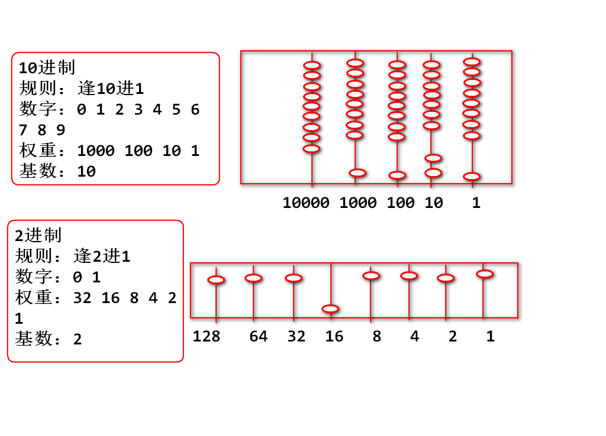
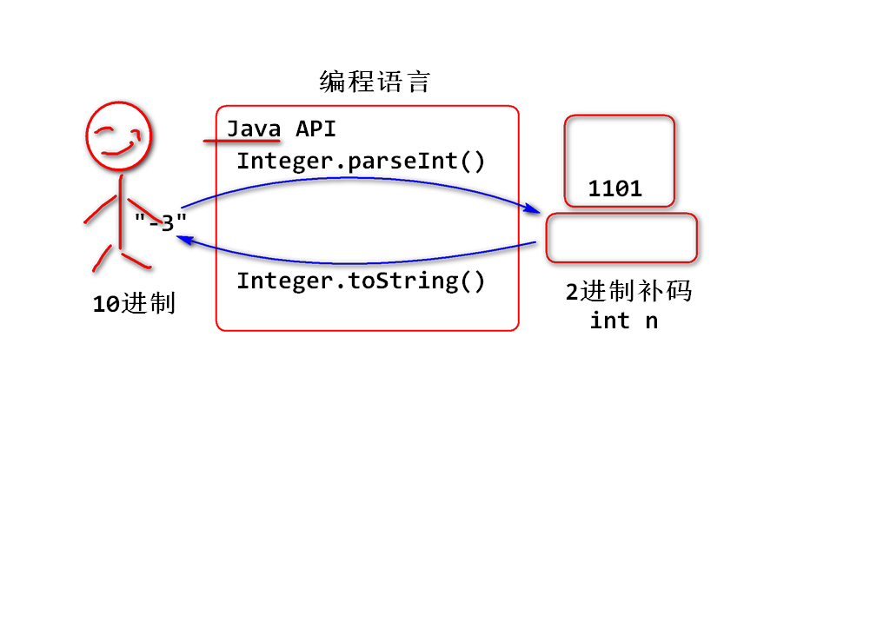
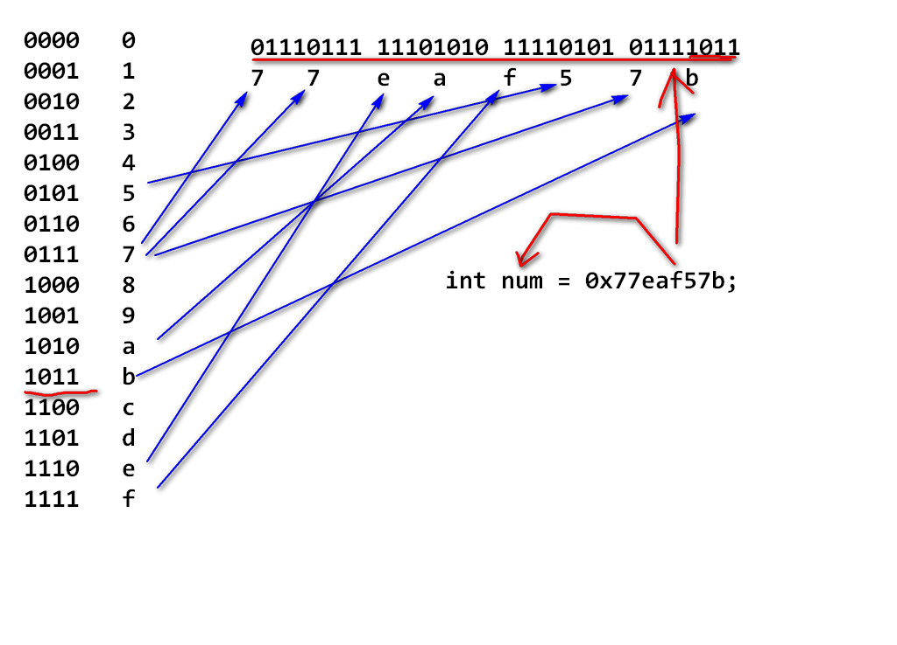
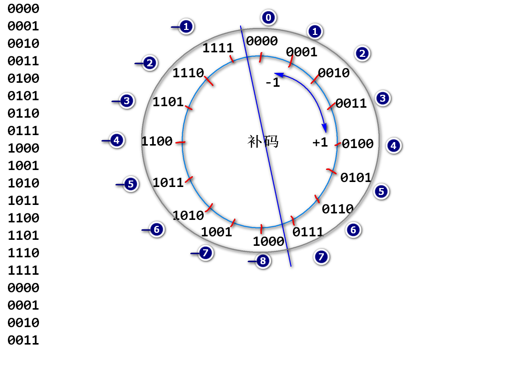
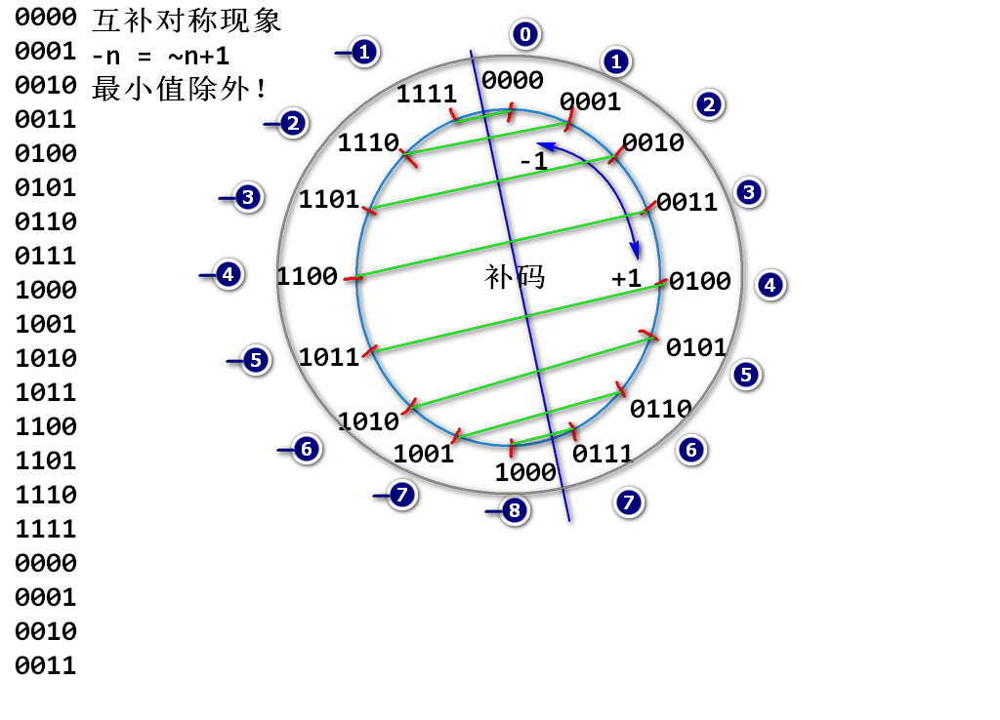

逢2进1的计数规则。


16进制是2进制的简写形式，从最低位开始每4位2进制可以缩写为1位16进制

计算机中用于处理有符号的一种编码，其核心想法是将固定位数的2进制分一半作为负数使用。
以4位补码为例研究补码

补码的互补对称现象：

语法(逻辑乘法)：
0 & 0 -> 0
0 & 1 -> 0
1 & 0 -> 0
1 & 1 -> 1
有0得0
将两个2进制数上下对齐，按位计算“&”
举个栗子：
n = 01001111 10111111 01000001 01111010
m = 00000000 00000000 00000000 11111111
k=n&m 00000000 00000000 00000000 01111010
代码：
int n = 0x4fbf417a;
int m = 0xff;
int k = n&m;
System.out.println(Integer.toBinaryString(n));
System.out.println(Integer.toBinaryString(m));
System.out.println(Integer.toBinaryString(k));
如上计算称为：掩码（Mask）计算，其中m是掩码（Mask）是一个“8位掩码”
掩码计算常见用途：
对2整次幂取余计算可以优化为掩码计算
00000000 00000000 00000000 00101001 //41 % 8 = 1 00000000 00000000 00000000 00000111 &&---------------------------------- 00000000 00000000 00000000 00000001 //1
00000000 00000000 00000000 00101010 //42 % 8 = 2 00000000 00000000 00000000 00000111 &&---------------------------------- 00000000 00000000 00000000 00000010 //2
00000000 00000000 00000000 00101101 //45 % 8 = 5 00000000 00000000 00000000 00000111 &&---------------------------------- 00000000 00000000 00000000 00000101 //5
经典面试题目：
优化 n % 16 为 （ ？ ） 答案 n & 0xf
测试案例：
for(int n=0; n<50; n++){
System.out.print(n & 7)
System.out.print(":")
System.out.println(n % 8)
}
将整数2进制整体向右移动，低位自动溢出， 高位补0
举个栗子: 将一个int数据拆分为4个byte
n = 01001101 00111010 10101000 01111110
b1 = 00000000 00000000 00000000 01001101
b2 = 00000000 00000000 00000000 00111010
b3 = 00000000 00000000 00000000 10101000
b4 = 00000000 00000000 00000000 01111110
n>>>8= 00000000 01001101 00111010 10101000
b1 = (n >>> 24) & 0xff
b2 = (n >>> 16) & 0xff
b3 = (n >>> 8) & 0xff
b4 = n & 0xff;
代码：
int n = 0x7d3aa87e;
int b1 = (n>>>24) & 0xff;
int b2 = (n>>>16) & 0xff;
int b3 = (n>>>8) & 0xff;
int b4 = n & 0xff;
System.out.println(Integer.toBinaryString(n));
System.out.println(Integer.toBinaryString(b1));
System.out.println(Integer.toBinaryString(b2));
System.out.println(Integer.toBinaryString(b3));
System.out.println(Integer.toBinaryString(b4));
或计算规则（逻辑加法）：
0 | 0 -> 0
0 | 1 -> 1
1 | 0 -> 1
1 | 1 -> 1
有1则为1
将两个整数2进制位对齐上下进行或计算
举个栗子：
n = 00000000 00000000 10011011 00000000
m = 00000000 00000000 00000000 11011110
k=n|m 00000000 00000000 10011011 11011110
代码：
int n = 0x9b00;
int m = 0xde;
int k = n|m;
//按照2进制输出 n m k
将4个byte数据合并为一个int数据：
b1 = 00000000 00000000 00000000 01001101
b2 = 00000000 00000000 00000000 00111010
b3 = 00000000 00000000 00000000 10101000
b4 = 00000000 00000000 00000000 01111110
n = 01001101 00111010 10101000 01111110
代码：
int b1 = 0x4d;
int b2 = 0x3a;
int b3 = 0xa8;
int b4 = 0x7e;
int n = (b1<<24)|(b2<<16)|(b3<<8)|b4;
//按照2进制检查 b1 b2 b3 b4 n
数学右移位 >>
复习移动小数点计算
一个整数 324994.
将小数点向右移动一次 3249940. 扩大10倍
将小数点向右移动两次 32499400. 扩大100倍
如果看做小数点不动，数字向左移动，数字每次向左移动一位，则扩大10倍
推广： 2进制时候，数字向左移动一位，数字整体扩大2倍！
举个栗子：
n = 00000000 00000000 00000000 00110010 50
m=n<<1 0000000 00000000 00000000 001100100 100
k=n<<2 000000 00000000 00000000 0011001000 200
a=n<<3 00000 00000000 00000000 00110010000 400
代码：
int n = 50;
int m = n<<1;
int k = n<<2;
int a = n<<3;
//按照10进制输出 n m k a
经典面试题目： 乘以2的n次幂，可以优化为左移位计算
优化 n * 8 为（ ） 答案: n<<3
数学右移位 >> 和逻辑右移位 >>> 的区别：
数学右移位 >> 结果接近数学结果，相当于数字除以2向小方向取整数
举个栗子：
n = 11111111 11111111 11111111 10011000 -104
m=n>>1 111111111 11111111 11111111 1001100 -52
k=n>>2 1111111111 11111111 11111111 100110 -26
h=n>>3 11111111111 11111111 11111111 10011 -13
g=n>>4 111111111111 11111111 11111111 1001 -7
n = 11111111 11111111 11111111 10011000 -104
a=n>>>1 011111111 11111111 11111111 1001100 接近最大值
逻辑右移位用于数字的拆分等场合。
代码：
int n = -104;
int m = n>>1;
int k = n>>2;
int h = n>>3;
int g = n>>4;
UTF-8：是Unicode字符序列化为byte数据时候的编码